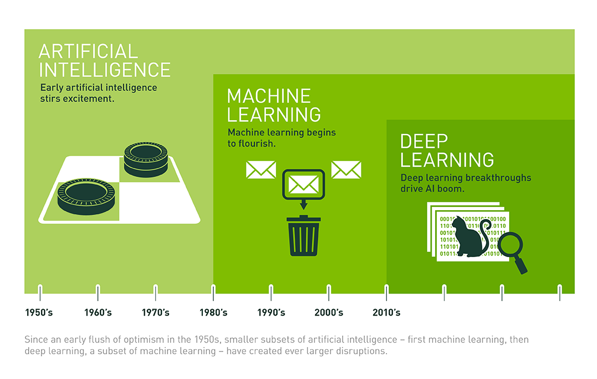
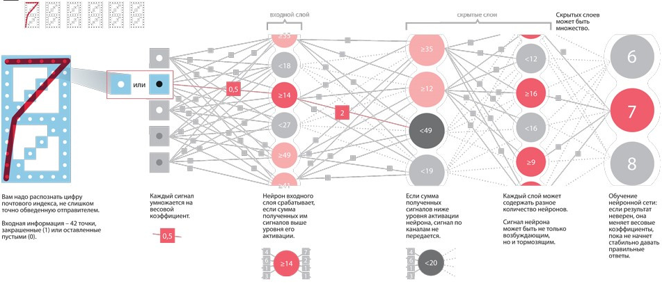

Нейросети – действующяя проблема современности В работе Oxford Martin School 2013 года рассказывалось про то, что 47% всех рабочих мест может быть автоматизировано на протяжении последующих 20 лет. Основным драйвером данного хода представляется использование искусственного интеллекта, функционирующего с большими данными, как более действенной замены человеку. Бизнесу нейросети позволяют автоматизировать различные процессы, а обычным пользователям — адаптировать их повседневную жизнь. На их базе функционирует ряд сервисов и цифровых продуктов о разнообразии и использовании которых я хочу узнать и рассказать в этом исследовании Тема моего исследования: Нейронные сети в повседневной реальности Цель моего исследования:: Определить представление нейросетей и изучить области их применения Задачи исследования: • Дать определение нейронных сетей, проанализировать их типы и назначение • Описать области использования нейронных сетей • Провести опрос с целью извлечения информации об осведомленности сообщества о поднятой теме • Проанализировать полученные материалы и сделать вывод Методы исследования: • Обобщение приобретенной информации о нейросетях • Проведение разбора по найденной информации • Проведение опроса по поднятой проблеме • Анализ приобретенных данных
Искусственная нейронная сеть (ИНС) — математическая модель (а также ее программное или аппаратное воплощение), построенная по принципу организации и функционирования биологических нейронных сетей — нервных клеток живого организма. Это понятие возникло при изучении процессов, протекающих в мозге, и при попытке смоделировать эти процессы. В разработке ИИ существует обширная область — машинное обучение. Она изучает методы построения алгоритмов, способных самостоятельно обучаться. Это необходимо, если не существует четкого решения какой-либо задачи. В этом случае проще не искать правильное решение, а создать механизм, который сам придумает метод для его поиска. Во многих статьях можно встретить термин «глубокое» — или «глубинное» — обучение. Под ним понимают алгоритмы машинного обучения, использующие много вычислительных ресурсов. В большинстве случаев под ним можно понимать просто “нейронные сети”. Чтобы не запутаться в понятиях «искусственный интеллект», «машинное обучение» и «глубокое обучение», предлагаем посмотреть на визуализацию их развития:
Существует два типа искусственного интеллекта (ИИ): слабый (узконаправленный) и сильный (общий). Слабый ИИ предназначен для выполнения узкого списка задач. Такими являются голосовые помощники Siri и Google Assistant и все остальные примеры, которые мы приводим в этой статье. Сильный ИИ, в свою очередь, способен выполнить любую человеческую задачу. На данный момент реализация сильного ИИ невозможна, он является утопической идеей.
Какие типы нейронных сетей существуют? Для разных задач применяются различные виды и типы нейронных сетей, среди которых можно выделить: • сверточные нейронные сети; • реккурентные нейронные сети; • нейронную сеть Хопфилда. Сверточные сети являются одними из самых популярных типов искусственных нейронных сетей. Так они доказали свою эффективность в распознавании визуальных образов (видео и изображения), рекомендательных системах и обработке языка. Рекуррентными называют такие нейронные сети, соединения между нейронами которых образуют ориентировочный цикл. Нейронной сетью Хопфилда называется полносвязная нейронная сеть с симметричной матрицей связей. В процессе работы динамика таких сетей сходится к одному из положений равновесия. Как устроена нейросеть? Нейросеть моделирует работу человеческой нервной системы, особенностью которой является способность к самообучению с учетом предыдущего опыта. Таким образом, с каждым разом система совершает все меньше ошибок. Как и наша нервная система, нейросеть состоит из отдельных вычислительных элементов – нейронов, расположенных на нескольких слоях. Данные, поступающие на вход нейросети, проходят последовательную обработку на каждом слое сети. При этом каждый нейрон имеет определенные параметры, которые могут изменяться в зависимости от полученных результатов – в этом и заключается обучение сети. Предположим, что задача нейросети – отличать кошек от собак. Для настройки нейронной сети подается большой массив подписанных изображений кошек и собак. Нейросеть анализирует признаки (в том числе линии, формы, их размер и цвет) на этих картинках и строит такую распознавательную модель, которая минимизирует процент ошибок относительно эталонных результатов. На рисунке ниже представлен процесс работы нейросети, задача которой — распознать цифру почтового индекса, написанную от руки.
Потенциальными областями применения искусственных нейронных сетей являются те, где человеческий интеллект малоэффективен, а традиционные вычисления трудоёмки или физически неадекватны (т.е. не отражают или плохо отражают реальные физические процессы и объекты). Рассмотрим отдельные области, где решение такого рода задач имеет практическое значение уже сейчас. Экономика и бизнес: прогнозирование временных рядов (курсов валют, цен на сырьё, спроса, объемов продаж,..), автоматический трейдинг (торговля на валютной, фондовой или товарной бирже), оценка рисков невозврата кредитов, предсказание банкротств, оценка стоимости недвижимости, выявление переоцененных и недооцененных компаний, рейтингование, оптимизация товарных и денежных потоков, считывание и распознавание чеков и документов, безопасность транзакций по пластиковым картам. Медицина и здравоохранение: постановка диагноза больному (диагностика заболеваний), обработка медицинских изображений, очистка показаний приборов от шумов, мониторинг состояния пациента, прогнозирование результатов применения разных методов лечения, анализ эффективности проведённого лечения. Авионика: обучаемые автопилоты, распознавание сигналов радаров, адаптивное пилотирование сильно поврежденного самолета, беспилотные летательные аппараты. Связь: сжатие видеоинформации, быстрое кодирование-декодирование, оптимизация сотовых сетей и схем маршрутизации пакетов. Интернет: ассоциативный поиск информации, электронные секретари и автономные агенты в интернете, фильтрация и блокировка спама, автоматическая рубрикация сообщений из новостевых лент, адресные реклама и маркетинг для электронной торговли, распознавание captcha. Автоматизация производства: оптимизация режимов производственного процесса, контроль качества продукции, мониторинг и визуализация многомерной диспетчерской информации, предупреждение аварийных ситуаций. Робототехника: распознавание сцены, объектов и препятствий перед роботом, прокладка маршрута движения, управление манипуляторами, поддержание равновесия. Политологические и социологические технологии: предсказание результатов выборов, анализ опросов, предсказание динамики рейтингов, выявление значимых факторов, кластеризация электората, исследование и визуализация социальной динамики населения. Безопасность, охранные системы: распознавание лиц; идентификация личности по отпечаткам пальцев, голосу, подписи или лицу; распознавание автомобильных номеров, мониторинг информационных потоков в компьютерной сети и обнаружение вторжений, обнаружение подделок, анализ данных с видеодатчиков и разнообразных сенсоров, анализ аэрокосмических снимков.